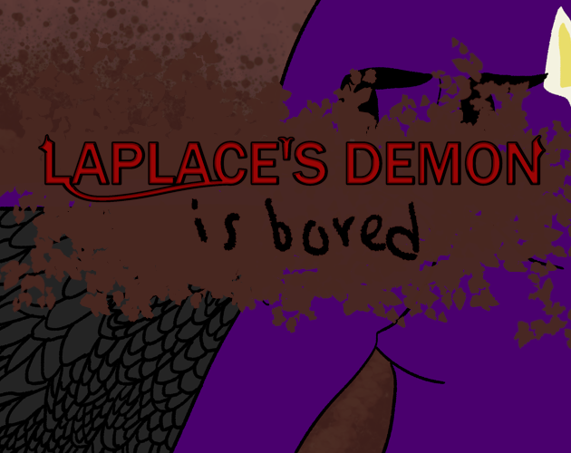
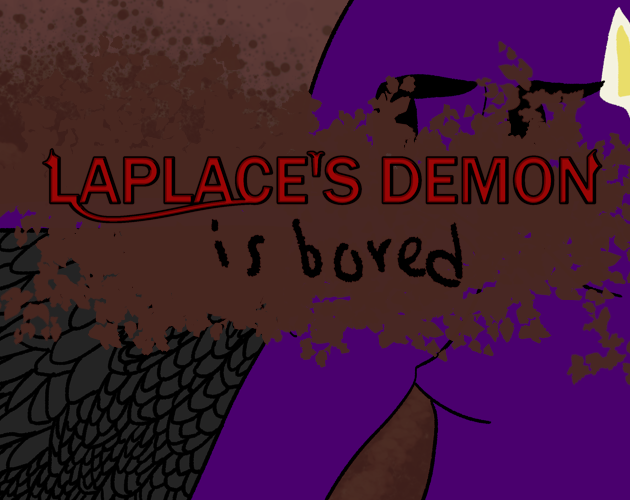

Hi I'm Tess Leiman, and I make games! I previously worked at Blizzard Entertainment on Overwatch 2 and Hearthstone.
I served as an Associate Hero Designer on the Overwatch team. I prototyped a bunch of heroes all while helping on the heroes currently in production. I also worked on aspects like the April Fools and Starwatch gamemodes.
On Heartstone, I worked on the Mercenaries game mode where I saw the creation of many playable characters through designing their kits and writing their art descriptions and voice lines.


 
